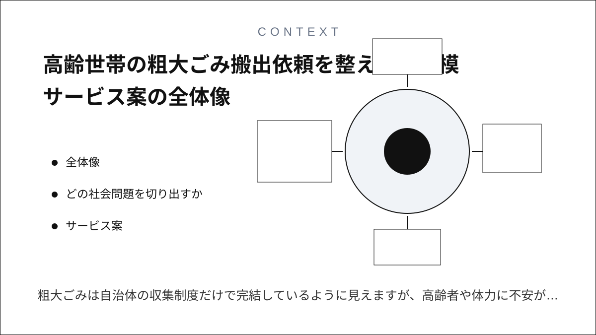
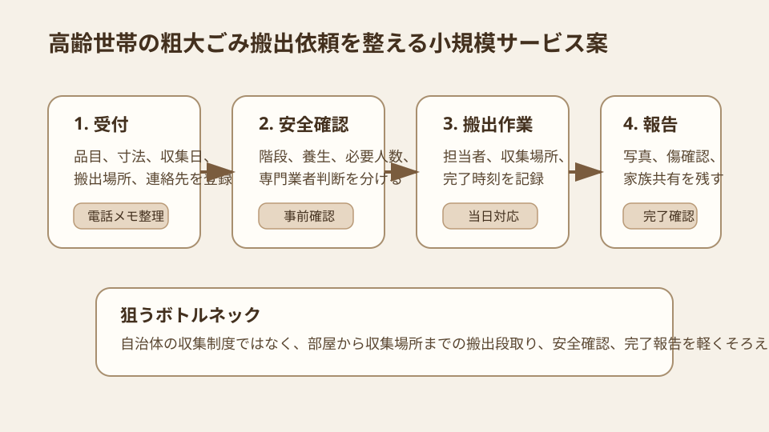
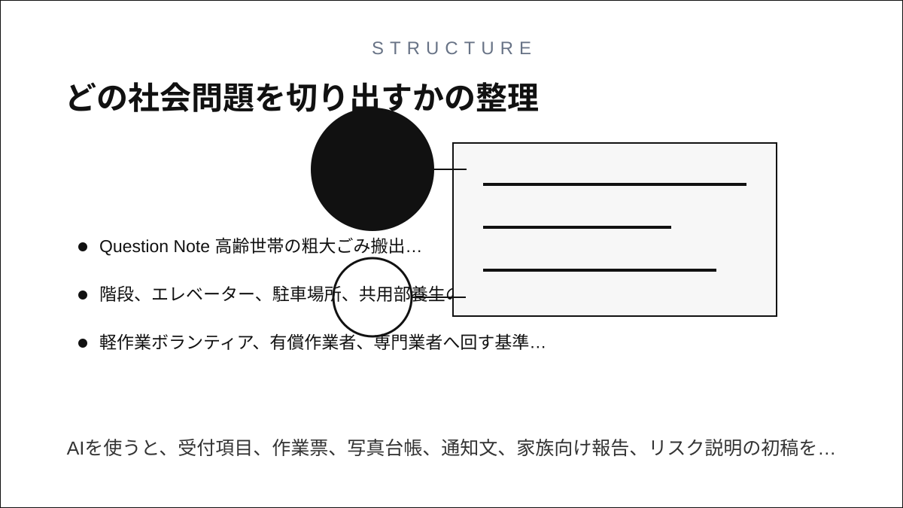
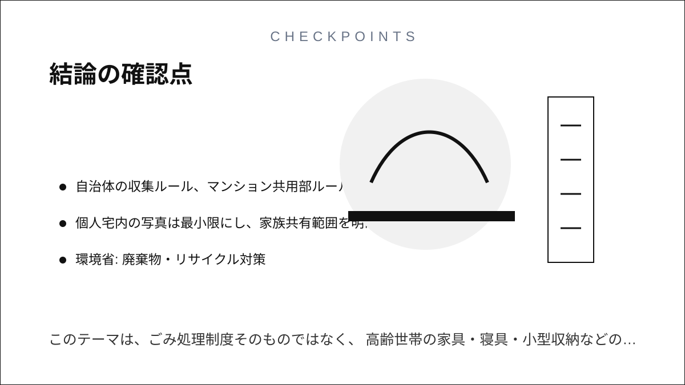

Question Note
高齢世帯の粗大ごみ搬出依頼を整える小規模サービス案


全体像
粗大ごみは自治体の収集制度だけで完結しているように見えますが、高齢者や体力に不安がある世帯では、指定場所まで運び出す段階が大きな負担になります。課題は処分方法の案内ではなく、収集日、搬出経路、手伝う人、家族連絡、完了確認がばらばらになることです。
狙いは、社会課題全体を解くことではなく、高齢世帯の家具・寝具・小型収納などの搬出依頼と完了記録に絞ることです。

どの社会問題を切り出すか
| 現場課題 | 何が起きるか | 既存手段の限界 |
|---|---|---|
| 収集予約と搬出作業が別 | 自治体予約は済んでも、当日までに指定場所へ出せない。 | 予約サイトは運び出し要員、階段、エレベーター、家族確認まで扱わない。 |
| 安全確認が属人化する | 重い家具、狭い廊下、階段作業でけがや建物破損のリスクが出る。 | 近所の善意だけでは、作業範囲と責任が曖昧になりやすい。 |
| 家族や管理人への連絡が散る | 立ち会い、鍵、共用部の養生、収集場所のルールが直前に混乱する。 | 電話メモでは、品目、寸法、収集日、完了写真が結びつかない。 |
サービス案
粗大ごみの収集予約日を起点に、品目、搬出経路、担当者、家族連絡、完了写真を一つにまとめる地域向けミニ台帳です。
- 品目、寸法、数量、収集日、シール購入状況、搬出場所を登録する。
- 階段、エレベーター、駐車場所、共用部養生の必要性を事前確認する。
- 軽作業ボランティア、有償作業者、専門業者へ回す基準を分ける。
- 作業前後の写真、傷確認、収集場所への設置完了を記録する。
- 家族、管理人、自治会向けに必要な範囲だけ共有する。
100万円規模に抑えた市場設定
初年度は1市内の高齢世帯80件と小規模集合住宅20棟を到達可能市場とし、その中から60件の搬出依頼を扱う前提にします。
| 項目 | 仮定 | 結果 |
|---|---|---|
| 到達可能市場 | 高齢世帯80件、小規模集合住宅20棟 | 地域包括、自治会、管理人経由で説明できる範囲 |
| 初年度利用 | 60件 | 引っ越し、片付け、買い替え時期に発生 |
| 搬出調整料 | 12,000円 x 60件 | 720,000円/年 |
| 集合住宅向け月額 | 5棟 x 4,000円 x 12か月 | 240,000円 |
| 初年度売上予想 | 合計 | 960,000円 |
収益モデル
- 基本: 搬出依頼1件ごとの調整料
- 追加: 集合住宅や自治会向けの月額受付台帳
- 追加: 片付け前の品目整理、写真台帳、家族向け報告書作成
初期は処分費用の代行ではなく、搬出作業の段取りと完了確認を整える課金の方が、自治体制度と競合しにくいです。
必要なシステム要件と支出
| 領域 | 要件・使い道 | 年額の目安 |
|---|---|---|
| フロント | 電話受付者、作業者、家族がスマホで品目と写真を確認 | 0円〜 |
| バックエンド | 依頼、品目、日程、担当、写真、家族共有、履歴を管理 | 36,000円 |
| 通知 | 収集日前、作業担当決定、完了報告をメール/SMSで送る | 24,000円 |
| 帳票・記録 | 作業票、完了報告、請求メモ、月次件数を出力 | 18,000円 |
| 運用・専門確認 | ドメイン、バックアップ、保険・規約確認、安全マニュアル | 92,000円 |
| 年間支出 | 合計 | 170,000円 |
AIを使った開発見積もり
AIを使うと、受付項目、作業票、写真台帳、通知文、家族向け報告、リスク説明の初稿を短縮できます。一方で、搬出安全、保険、作業範囲、自治体ルールの確認は人が担う必要があります。
| 作業 | AIで短縮できること | 目安 |
|---|---|---|
| 要件整理 | 電話受付メモから品目、経路、安全確認の項目を整理 | 3〜5日 |
| プロトタイプ | 依頼一覧、写真、担当割り、完了報告のたたき台を作成 | 1〜2週間 |
| 本実装 | 通知、権限、帳票、写真管理、テストデータを補助 | 2〜3週間 |
| 検証・修正 | 作業者のスマホ入力、家族共有、紙併用を確認 | 1週間 |
1人開発でも、初期版は4〜7週間で作れる想定です。
売上・支出・利益
売上 - 支出 = 利益
| 項目 | 金額 | 補足 |
|---|---|---|
| 売上 | 960,000円 | 搬出調整60件720,000円 + 集合住宅向け月額240,000円 |
| 支出 | 170,000円 | ホスティング、SMS、帳票、保険・規約確認、安全資料 |
| 利益 | 790,000円 | 実行者の作業時間は別途。地域の片付け支援として検証できる水準 |
必要人数と人材要件
この規模では、実行者1名 + 単発外注 + 登録作業者を前提にします。
- 実行者: Webアプリを実装でき、自治会、管理人、家族、作業者の連絡を調整できる人
- 補助外注: 保険・規約、安全講習、会計、アクセシビリティ点検を単発依頼
- 望ましいスキル: 写真付きCRUD、日程調整、帳票設計、現場安全、電話受付の業務設計
リスクと最初の検証
- 重量物や危険作業は登録作業者だけで対応せず、専門業者へ回す基準を決める。
- 自治体の収集ルール、マンション共用部ルール、立ち会い条件を案件ごとに確認する。
- 個人宅内の写真は最小限にし、家族共有範囲を明確にする。
最初は10件だけ試し、受付から搬出完了までの電話回数、作業時間、トラブルの有無を測ります。
結論
このテーマは、ごみ処理制度そのものではなく、高齢世帯の家具・寝具・小型収納などの搬出依頼と完了記録に切ると、生活の困りごとに近い小規模サービスとして成立しやすいです。
